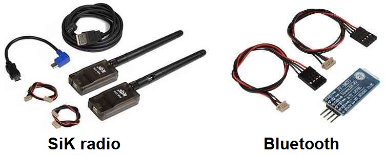
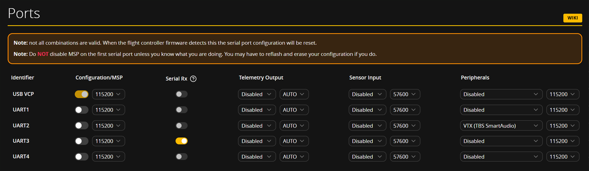
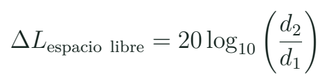
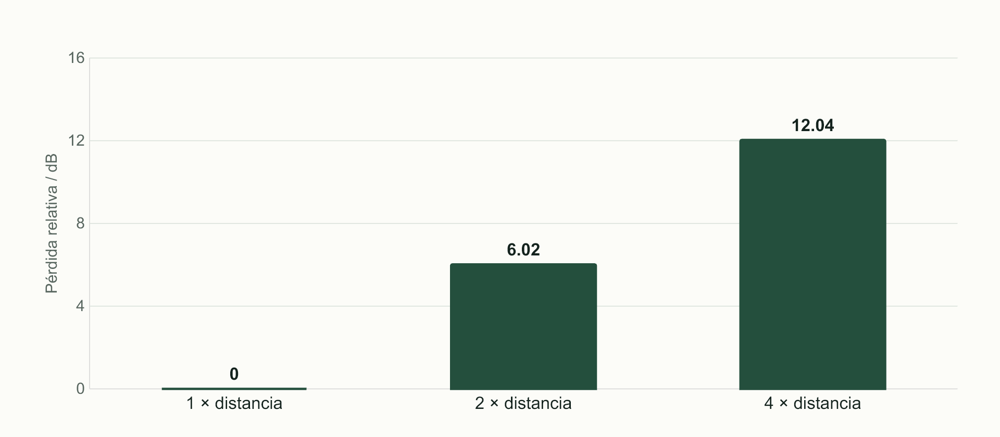

Radio, telemetría, vídeo y protocolos de conexión
Relacionar cada enlace con su función y asignar conexiones y puertos sin confundir radio con protocolo.
Tres cadenas que no significan lo mismo
El enlace de mando permite al piloto enviar órdenes. La telemetría devuelve estados o medidas. El vídeo transporta imágenes. Pueden compartir parte del equipo o funcionar por rutas distintas. Un receptor RC puede llevar telemetría hacia la radio del piloto, y un módem puede comunicar el autopiloto con Mission Planner. Antes de conectar, se define qué información necesita circular y quién la consume.

Función antes que nombre comercial
| Cadena | Información | Prueba de aula |
|---|---|---|
| Mando | Canales y estado del enlace | Mover un control y observar su canal |
| Telemetría | Batería, estado o posición | Reconocer una medida recibida |
| Vídeo | Imagen y, si existe, OSD | Distinguir imagen de datos superpuestos |
Que la imagen se vea bien no prueba que el mando esté disponible. Que Mission Planner reciba datos no prueba que todos los modos estén configurados. El curso propone una evidencia distinta para cada cadena, con los motores inmóviles y según el banco preparado por el docente.
UART, CRSF, SBUS y MAVLink en su lugar
UART describe una interfaz serial usada por muchos periféricos. El protocolo y el nivel eléctrico determinan qué significa la información. En una conexión UART convencional, el transmisor de un equipo llega al receptor del otro y se revisa la referencia común; los puertos reales pueden tener particularidades. CRSF utiliza una interfaz serial para mando y telemetría en receptores compatibles. SBUS tiene requisitos de señal que no se resuelven seleccionando cualquier pad RX.
Capas que conviene separar
| Término | Qué representa | Qué no resuelve solo |
|---|---|---|
| UART | Interfaz serial de la placa | Protocolo y niveles |
| CRSF / SBUS | Formato de mando según sistema | Banda de radio utilizada |
| MAVLink | Mensajes entre sistemas compatibles | Enlace RF o alimentación |
| GPS / GNSS | Obtención de posición y tiempo | Canal de mando del piloto |
Una FC puede dedicar distintos UART a receptor, GPS y otros periféricos. Se conserva una tabla con función, puerto y configuración. No se activa MSP como interruptor genérico de todos los puertos. La documentación actual de Betaflight diferencia Serial RX de otras funciones y detecta conflictos de asignación. Los parámetros se contrastan con la combinación real del banco.
Banda y formato
Un receptor trabaja en una banda determinada y entrega CRSF por cable. ¿CRSF es el nombre de esa frecuencia?
Ver razonamiento del caso
No. La banda corresponde al enlace de radio; CRSF identifica el protocolo utilizado en la interfaz de ese sistema.
El puerto físico y la función seleccionada

El punto de partida es el esquema: receptor conectado al puerto identificado, señal compatible y alimentación correcta. Después se asigna la función correspondiente en el programa. Si el receptor está en UART2 y Serial RX se habilita en UART1, el nombre comercial correcto no arregla la ruta. De la misma manera, dos periféricos no comparten una función por conectarlos a pads físicamente cercanos.
Registro de asignación del caso
| Periférico | Puerto físico | Función a comprobar |
|---|---|---|
| Receptor del ejemplo | Por identificar en el manual | Serial RX y proveedor compatible |
| GPS del ejemplo | Por identificar en el manual | Entrada de posición y configuración |
| Telemetría del autopiloto | Puerto del modelo exacto | Mensajes y estación de tierra |
El alumno puede resolver el caso con documentación si no dispone de una FC. Debe mostrar de dónde sale la asignación. Es más útil un campo pendiente explicado que escribir UART1 por costumbre.
Propagación y antenas: una cuenta introductoria
Una antena, su orientación y el entorno afectan el enlace. Estructuras conductoras, obstáculos, posición de las antenas y alimentación pueden modificar la recepción. La pérdida de espacio libre es una referencia ideal para comprender tendencias; no predice el alcance seguro de un sistema real ni sustituye sus pruebas y condiciones de operación.

Duplicar la distancia
En el modelo ideal, ¿cuánto cambia la pérdida al duplicar la separación?
Ver razonamiento del caso
20 log10(2) ≈ 6,02 dB. Cuadruplicarla produce aproximadamente 12,04 dB adicionales. Obstáculos, orientación y sistema real pueden cambiar mucho el resultado.
RSSI, LQ y SNR no son etiquetas intercambiables. Se consulta qué mide el sistema y cómo lo presenta. Un porcentaje no se convierte automáticamente en metros. En clase se reconoce la tendencia del indicador y su relación con la prueba realizada, sin fabricar un umbral universal para radios distintas.
Se documenta la ubicación de antenas y los conectores de acuerdo con el fabricante. La selección de banda, potencia y uso del espectro se contrasta con las condiciones aplicables al lugar y al equipo, sin copiar valores de otro país o de una captura antigua.

Laboratorio de trazado y diagnóstico
- Separa en un dibujo mando, telemetría y vídeo del equipo mostrado.
- Completa una tabla de receptor y periféricos con puerto, tensión, señal y protocolo.
- En una captura Ports, localiza qué función se asignó a cada UART.
- Resuelve un caso con receptor conectado al puerto distinto del configurado.
- Calcula el cambio ideal de pérdida al duplicar distancia y explica por qué no da alcance real.
- Observa con el docente el cambio de un canal y una medida de telemetría.
- Propón una prueba independiente para cada cadena y conserva sus resultados por separado.
El diagnóstico avanza por capas: alimentación del periférico, conexión eléctrica, asignación del puerto, formato y dato observado. Una falta de movimiento de canales puede deberse a diferentes capas. La práctica no consiste en cambiar proveedores al azar hasta que aparezca algo. Se plantea una hipótesis y se busca la evidencia que la confirma o la descarta.
Si un equipo usa vídeo, se reconoce cámara, transmisor y receptor de imagen. El curso no exige que todos compren gafas. La promesa principal sigue siendo selección y ensamblaje; el vídeo se integra como un subsistema cuyo consumo, interfaz y sujeción también deben constar en la lista.
La comunicación que queda documentada
Preguntas de revisión
| Pregunta | Respuesta que se debe demostrar |
|---|---|
| ¿De dónde viene la orden? | Control, receptor y canal |
| ¿Qué cable lleva el dato? | Puerto y referencia de contactos |
| ¿Qué entiende la FC? | Protocolo y configuración |
| ¿Qué vuelve al operador? | Medida y receptor de telemetría |
Como investigación, elige un periférico del equipo de MECRO y busca su manual. Identifica si necesita una o dos líneas de datos, si tiene una alimentación separada y qué protocolo entrega. Una denominación “GPS” no decide automáticamente el conector ni la tensión de todos los módulos. La solución se presenta con una referencia que otro compañero pueda verificar.
La siguiente sesión utilizará estas tablas para navegar Betaflight con propósito. El alumno ya debe poder explicar por qué una pestaña de puertos existe y qué debe coincidir con el montaje. Esa relación entre pantalla y objeto será el centro de la práctica de configuración.
Práctica guiada
- Mostrar las tres cadenas con funciones diferentes.
- Trazar un receptor desde el manual hasta su UART y proveedor.
- Resolver el caso de puerto equivocado y el cálculo de distancia relativa.
- Comprobar un canal y una medida de telemetría en la demostración.
Preguntas de cierre
¿MAVLink es una frecuencia de radio?
No. Es un protocolo de mensajes que necesita un transporte compatible.
¿Ver vídeo prueba que llega mando?
No. Son cadenas que requieren comprobaciones independientes.
¿6 dB de pérdida adicional dan un alcance garantizado?
No. Es una comparación ideal; faltan entorno, antenas y sistema real.
Entrega
Mapa de comunicaciones, tabla de puertos y diagnóstico argumentado de una ruta.
Fuentes para ampliar
[PORTS] Betaflight. Ports Tab.
[RX] Betaflight. Receiver Tab.
[RADIO] ArduPilot. Opciones de telemetría.
[BF] Betaflight. Setup Guide: organización de la puesta en marcha.
[APCONFIG] ArduPilot. Mandatory Hardware Configuration.